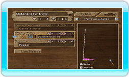

- Changer De Matériel
Ouvrez le menu de pêche en appuyant sur le bouton - et sélectionnez « Changer de matériel de pêche ».
Sélectionnez un poisson-cible : Changez de poisson-cible en appuyant sur le bouton + ou le bouton -. Les poissons qui ne sont pas encore déverrouillés n'apparaîtront pas.
Sélectionnez la taille de votre ligne : Surlignez « Mouliner la ligne » et appuyez à droite ou à gauche sur la manette + ou le Stick directionnel pour changer la taille de la ligne. Les lignes plus grosses sont plus solides, mais elles attireront moins les poissons. Les lignes plus fines attireront plus les poissons, mais risquent de se briser plus facilement. Essayez de trouver le juste milieu !
Sélectionnez un Leurre : Surlignez « Leurre » en appuyant en haut ou en bas sur la manette + ou le Stick directionnel et appuyez sur le bouton A.
Profondeur du leurre : Les leurres sont classés selon la profondeur.
- Surface : Flotte à la surface de l'eau
- Peu profonde : Flotte juste sous la surface de l'eau
- Moyenne : Flotte à une profondeur moyenne
- Profonde : Flotte juste
- Fond : Coule jusqu'au fond
Surlignez la profondeur que vous désirez en appuyant à gauche ou à droite sur la manette + ou le Stick directionnel et appuyez ensuite sur le bouton A pour la sélectionner. Lorsque vous aurez sélectionné une profondeur, sélectionnez le leurre que vous voulez utiliser à cette profondeur. En général, il faut choisir un leurre qui a la valeur d'attrait la plus élevée selon le poisson-cible.
|
|
|